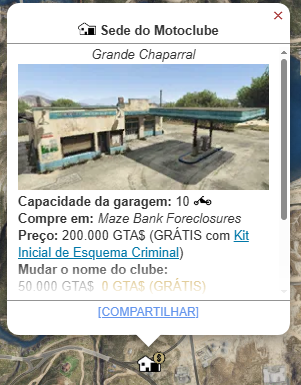
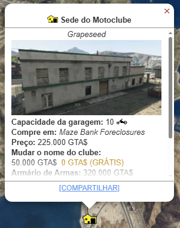
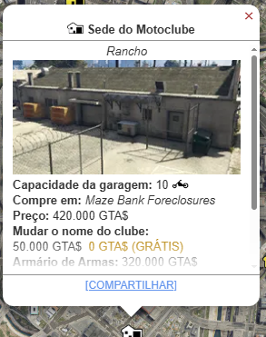
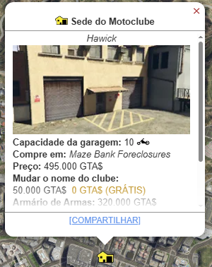
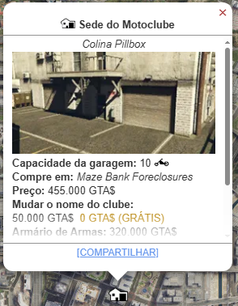
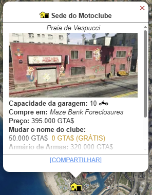

Motoclube
O Motoclube (MC Clubhouse) é a propriedade fundamental introduzida na atualização Bikers. Sua função principal é ser a base de operações necessária para comprar e operar os Esquemas de Motoqueiro (Cocaína, Metanfetamina, etc.), que são excelentes fontes de renda passiva.

Metodo de Obter
A Sede do Motoclube é a propriedade essencial para desbloquear o sistema de lucro dos esquemas.
Você pode comprar uma Sede do Motoclube (MC Clubhouse) no Maze Bank Foreclosures, que você pode acessar pelo navegador da Internet no seu smartphone. O site pode ser encontrado na aba Dinheiro e Serviços ou inserindo o seguinte URL no seu navegador: www.maze-bankforeclosures.com.
No total, existem 12 Sedes do Motoclube disponíveis para compra em todo o mapa.0
- Great Chaparral: 200.000 
- Grapessed: $ 225.000 
- Baía de Paleto : $ 242.000
- Baía de Paleto : $ 250.000
- Sandy Shores: $ 210.000
- Del Perro: $ 365.000
- Rancho: $ 420.000 
- La Mesa: $ 449.000
- Centro de Vinewood: $ 472.000
- Hawick: $495.000 
- Pillbox Hill: $455.000 
- Vespucci Beach: 395.000 


Melhorias e Personalizações
As melhorias da Sede focam em conveniência e serviços, e não na produção dos esquemas (que são comprados separadamente).
Oficina
Permite customizar suas motos e iniciar missões de Serviço ao Cliente (pequeno lucro ativo).
- Oficina de Motos: $ 530.000
Acomodações
Permite definir o Motoclube como seu ponto de spawn.
- Acomodações Privadas: $ 273.000
Bar e Decoração
Customização estética do interior e acesso a bebidas
- Bar e Decoração: $ Variável
Esquemas do Motoclube
Localizações dos esquemas do MotoClube e o custo de suas melhorias
Documentos Falsificados
- Grapeseed: $ 650.000
- Paleto Bay: $ 732.000
- Elysian Island: $ 975.000
- Textile City: $ 1.235.000
- Equipamentos: $ 550.000
- Funcionarios: $ 195.000
- Segurança: $ 285.000
▸ Melhorias
Ervas
- Centro de Vinewood: $ 1.358.500
- Elysian Island: $1.072.500
- Mount Chuliad: $ 805.200
- San Chianski: $ 715.000
- Equipamentos: $ 990.000
- Funcionarios: $ 273.000
- Segurança: $ 313.500
▸ Melhorias
Dinheiro Falso
- Grand Senora: $ 845.000
- Paleto Bay: $ 951.600
- Cypress Flats: $ 1.167.500
- Vespucci Canals $ 1.605.000
- Equipamento: $ 800.000
- Funcionarios: $ 273.000
- Segurança: $ 456.000
▸ Melhorias
Metanfetamina
- Grand Senora: $ 910.000
- Paleto Bay: $ 1.024.800
- Terminal: $ 1.365.000
- El Burro Heights: $ 1.729.000
- Equipamento: $ 1.100.000
- Funcionarios: $ 331.500
- Segurança: $ 513.000
▸ Melhorias
Cocaína
- Alamo sea: $ 975.000
- Paleto Bay: $ 1.098.000
- Elysian Island: $ 1.462.500
- Morningwood: $ 1.852.500
- Equipamento: $ 935.000
- Funcionarios: $ 390.000
- Segurança: $ 570.000
▸ Melhorias
Lucro
O Motoclube gera lucro de duas maneiras principais: Atividades Ativas e Renda dos Esquemas.
▸ Lucro Principal (Indireto): Esquemas de Produção
- Função Passiva: A Sede permite a compra e operação dos Esquemas de Produção (Cocaína, Metanfetamina, Dinheiro Falso, etc.). Este é o lucro real do Motoclube.
- Os esquemas do Motoclube (MC) são a base para quem quer ganhar dinheiro de forma "semi-passiva". Você compra os suprimentos (ou rouba), espera o tempo de produção e depois vende.Eles são comprados através do notebook dentro da sua Sede do Motoclube.
- Cocaína: $525.000
- Metanfetamina: $ 448.000
- Dinheiro Falso: $ 367.500
- Maconha: $ 315.000
- Documentos Falso: $ 147.000
▸ Lucro:
▸ Lucro Secundário: Serviço ao Cliente (Serviço de Motos)
- Função Ativa: Missões rápidas onde você customiza e entrega motos para clientes.
- Rendimento: Pagamentos baixos (cerca de $ 20.000 a $ 40.000 por missão).
- Gestão: Requer a compra da Oficina de Motos ($530.000) na Sede.
▸ Lucro Rápido: Missões de Sede (Clubhouse Contracts)
- • Função Ativa: Missões iniciadas no quadro de avisos da Sede (como "Execute Ride" ou "Weapon of Choice").
- • Rendimento: Pagamentos fixos decentes (cerca de $ 50.000 a $ 75.000 por missão).
O Motoclube é um investimento obrigatório e de baixo custo inicial ($ 200.000), mas seu verdadeiro valor reside em ser o Hub que desbloqueia a maior parte da renda passiva de longo prazo (Cocaína, Metanfetamina, etc.) do GTA Online.
Assista a este guia para saber mais sobre a Boate no GTA Online. Este vídeo explica como funciona o esquema e como gerenciar.
l